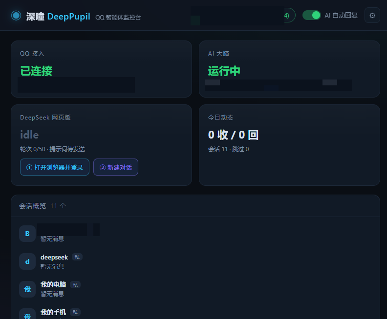
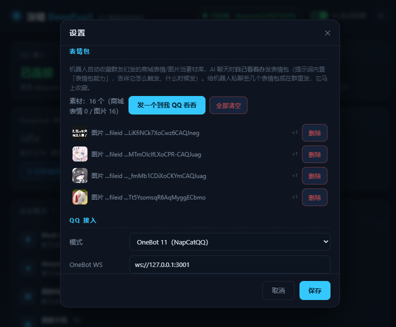

💬
群消息刷太快
不是每条都要你亲自回。让深瞳盯着：@ 它才回、命中关键词才回、闲时按概率冒泡。
本地运行 · 免 API Key · 数据不出机
深瞳接管你 QQ 的消息流：按你定的规矩替你回复，还会自己发表情包。 大脑直接用 DeepSeek 网页版 —— 免 API Key、免 API 费。
默认安装到 D:\深瞳 · 双击「开启.bat」即用 · 数据全部留在本机
不是每条都要你亲自回。让深瞳盯着：@ 它才回、命中关键词才回、闲时按概率冒泡。
专属「表情包能力」提示词教它何时发、怎么接梗。它会自己发表情包，三连都行。
直接驱动网页版大模型：免 Key、免 API 费。登录一次，登录态存在你自己的浏览器目录里。
不碰 API，直接驱动 chat.deepseek.com：免 Key、免 API 费。用独立浏览器配置目录记住登录态，重启不丢；50 轮自动开新对话并重发提示词。
自动收藏所有来信里的商城表情/图片，存本地副本永不过期；AI 回复里写标记就自动发表情包，一条消息打包多个，不会刷屏。后台可视化增删。
「指定会话」可多选：选中的会话全部回复，其他一律不回；一个都不选 = 全部回复。私聊、群聊混选都行。
群聊需 @ 才回、关键词过滤、非 @ 主动回复概率、自动 @ 触发者、引用原消息 —— 每条都能在面板里拧。
收到图片自动下载，交给 DeepSeek 看图后再回（可关）。表情包也照收不误。
设定时段自动闭嘴；主人在 QQ 里发 /状态 /暂停 /帮助 即可管理，指令不受免打扰限制。
网页看板实时推送消息与回复（SSE）：连接状态、今日收发、会话概览、逐条动态，全在浏览器里。
没有插件、没有商城、没有花里胡哨。一个安装包 2.4 MB，装完就是「开启.bat」。
一个引擎，专注做好一件事。登录态保存在本机浏览器目录里，重启不丢。
免 Key 网页版直连 · 支持看图回复
另有「API 接口」模式：任何 OpenAI 兼容服务（本地 Ollama、各家中转站）填 baseUrl + Key + model 即可切换。


这首歌和这支片子都是程序生成的：配乐由 JS 合成器现场合成（120 BPM 合成波），画面 canvas 逐帧离格渲染后合成视频——零素材、零剪辑软件。片里飞的都是深瞳自己收藏的表情包。
▶ 有声音：点播放器里的音量键 · 歌词字幕在画面里
不需要。默认直接驱动 DeepSeek 网页版（免 Key、免 API 费）。如果你手里有 OpenAI 兼容的 Key，面板里也能填，走 API 模式。
高频发消息/发图是风控大头，深瞳内置：回复最小间隔、表情包批量打包成一条消息、40 秒表情冷却、免打扰时段。建议用小号，遵守平台规则，个人自用。
自动收集所有进来的消息：商城表情（mface）与图片都会入库，并下载本地副本（QQ 图链会过期，本地副本不会）。面板里可以逐条删除或一键清空。
提示词（人设）在面板里写死给你，每段新对话自动发一次；群里还有 @ 规则、关键词过滤、概率回复替你兜底。
全在本机：D:\深瞳\data（配置、日志、表情包库、浏览器登录态）。不联网上传任何聊天内容。
每段对话开头自动发一次完整提示词（含表情包能力段）；答满 50 轮自动开新对话。想立刻重置，点面板上的「② 新建对话」。
0 元。安装包 2.4 MB，运行全本地。
Windows 安装包 · 2.4 MB · 默认 D:\深瞳 · 覆盖安装保留数据
系统要求：Windows 10/11 + Edge/Chrome + 一台 QQ（建议小号）+ 任意 OneBot 11 机器人端